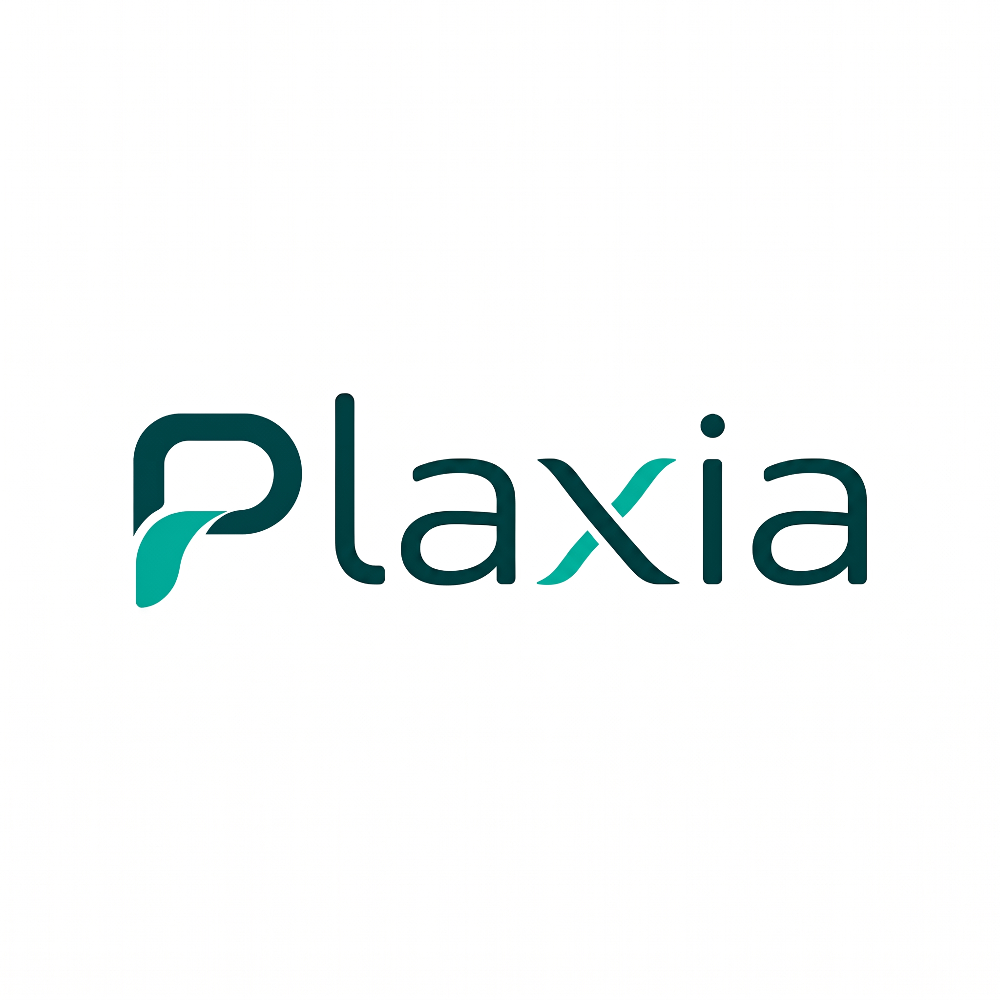

Plaxia
SaaS Médico B2B Comercial / PrivadoPlataforma clínica integral multi-tenant orientada a la reducción de fricción operativa en consultorios y clínicas médicas.

Implementaciones Clave de Ingeniería:
Pipeline con Web Speech API nativo del navegador para dictado en tiempo real sin latencia ni costo de streaming, procesado por LLM para organizar automáticamente evoluciones médicas bajo estándar SOAP.
Pantalla de sala de espera sincronizada mediante WebSockets en Node.js. Emparejamiento por código QR en 5 segundos y aviso auditivo/visual inmediato al llamar al paciente desde el consultorio.
Trazabilidad clínica inalterable bajo normativas argentinas (Leyes 26.529 y 27.553). Encriptación simétrica AES-256 *at-rest* para notas confidenciales de salud mental y firma profesional validada.
Conexión directa a Web Services de AFIP (WSDL/SOAP) para emisión de Facturas A, B y C de manera transparente durante el cobro de la consulta médica.